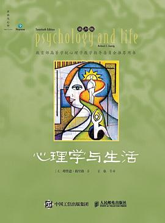
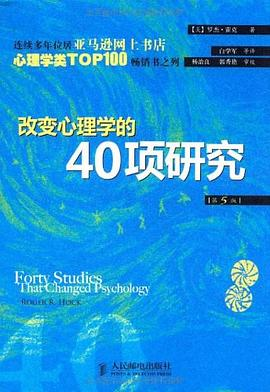
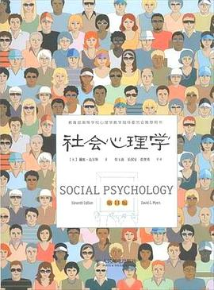
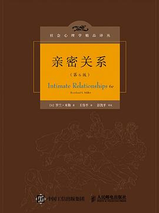
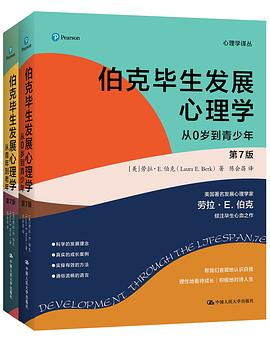

延伸书单 / 第2阶
第二阶 把地基打牢（教材级通识）
不想只听故事、想看「心理学到底是怎么变成一门科学」的，从这一阶开始。教材可以跳读，不必从头啃。

《心理学与生活》[美] 理查德·格里格、菲利普·津巴多
全世界用得最久的心理学入门教材之一，从感知觉讲到社会行为。它最大的好处是「教科书却像读物」：每个概念后面都跟着你身边会发生的事。
什么时候读：想系统补一遍心理学全貌的人。当工具书翻，不必通读。
京东购买 →
《改变心理学的40项研究》[美] 罗杰·霍克
四十个真正改变学科走向的经典实验：巴甫洛夫的狗、米尔格拉姆的服从、依恋的猴子……每个实验都讲清楚「科学家想证明什么、结果打脸了谁的直觉」。
什么时候读：刷到过很多心理学短视频、想知道哪些是真的人。读完它，你对网络心理学的免疫力会高一个数量级。
京东购买 →
《社会心理学》[美] 戴维·迈尔斯
讲「人和人在一起时会发生什么」：从众、偏见、说服、群体极化。你看不懂为什么自己会被舆论带着走、会在群体里做一个人时不会做的事，答案全在这里。
什么时候读：容易被情绪化的舆论带动、想知道「大家为什么这样」的人。
京东购买 →
《亲密关系》[美] 罗兰·米勒
用实证研究讲爱情、依恋、冲突与承诺，几乎覆盖亲密关系的所有疑问。它不教你「套路」，它告诉你亲密关系里哪些是错觉、哪些有数据支撑。
什么时候读：正在恋爱、结婚或刚分手，想知道「我们之间到底发生了什么」的人。
京东购买 →
《伯克毕生发展心理学》[美] 劳拉·E·伯克
人从受精卵到老年的完整发展地图。「童年与家庭」那一组（E 组），如果让你想看得更细——每个年龄段本来该发生什么、卡住了会怎样——这本是正路。
什么时候读：做父母的人，以及想理解「我现在这个样子是怎么长出来的」的人。
京东购买 →